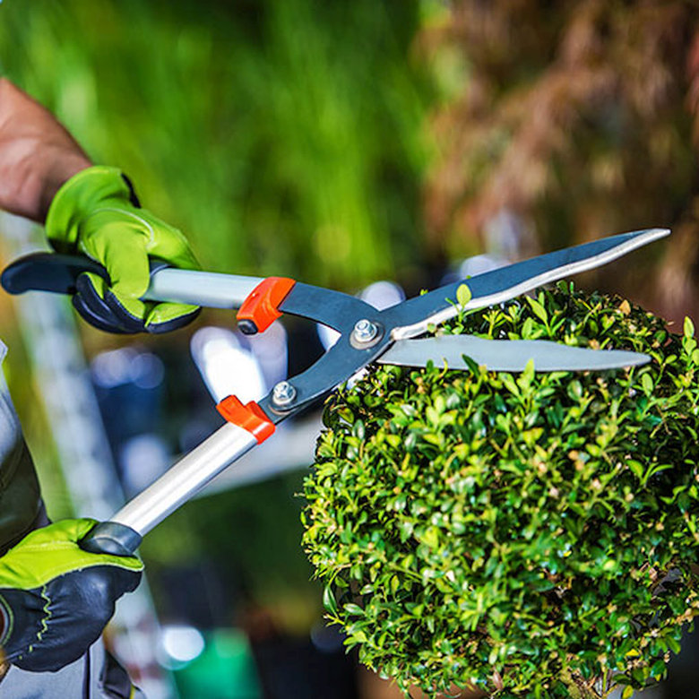

Über uns
Lernen Sie die Menschen hinter Creativ-Grün kennen.
Unsere Geschichte
Creativ-Grün wurde 2003 von Rudi Löhr als Einmann-Firma gegründet. Mit Leidenschaft für Garten- und Landschaftsbau, viel Know-how und einem starken Qualitätsanspruch wuchs das Unternehmen kontinuierlich.
Heute beschäftigen wir über 30 Mitarbeiter, die in 7 Kolonnen täglich im Einsatz sind – in Konstanz und der gesamten Bodenseeregion.
Unser moderner Maschinenpark umfasst 2 Lkw, 5 Bagger und 5 Radlader, sodass wir auch anspruchsvolle Projekte effizient und termingerecht umsetzen können.
2003
Gründungsjahr
30+
Mitarbeiter
7
Kolonnen
5
Bagger & Radlader

„Wir gestalten grüne Lebensräume.“ — Rudi Löhr, Inhaber

In unserem Team arbeiten verschiedene Fachbereiche Hand in Hand:
Landschaftsgärtner
Techniker
LKW-Fahrer
Baumkletterer
Büromitarbeiter
Lernen Sie uns persönlich kennen
Vereinbaren Sie ein unverbindliches Beratungsgespräch – wir freuen uns auf Ihr Projekt.